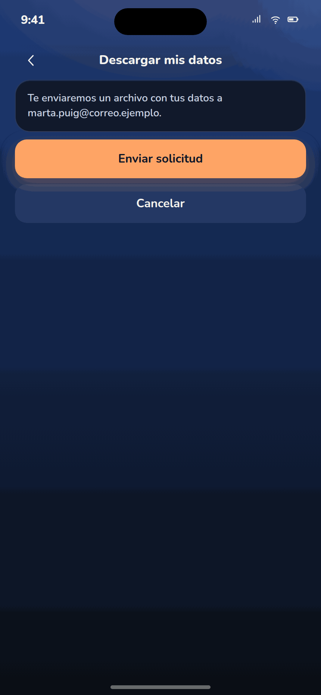
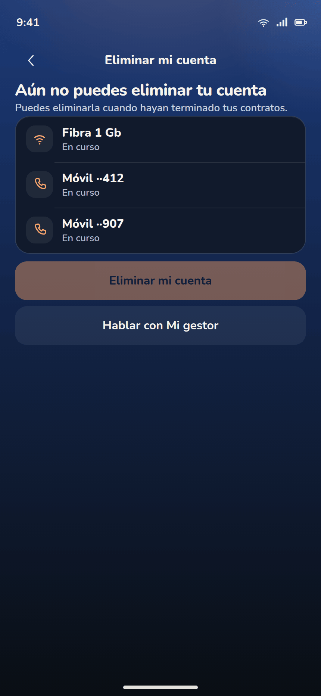
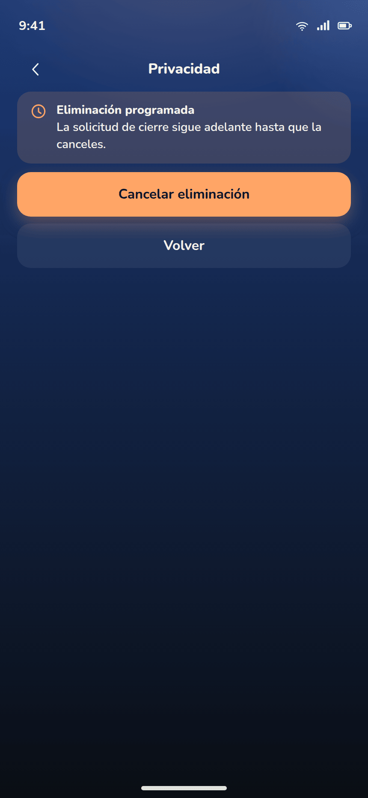
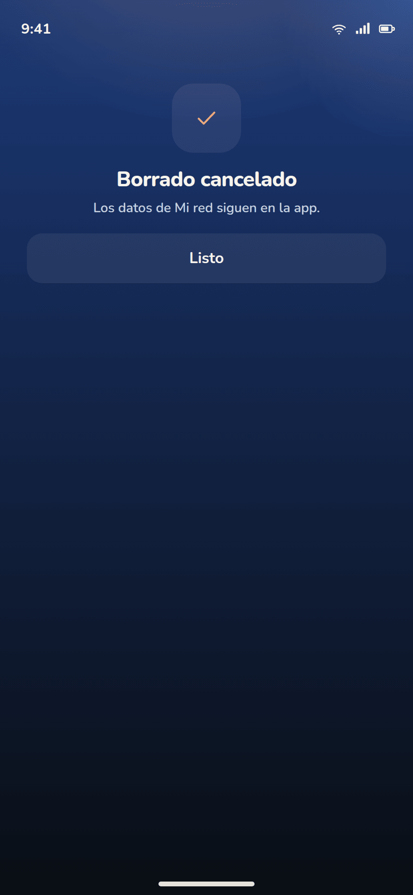
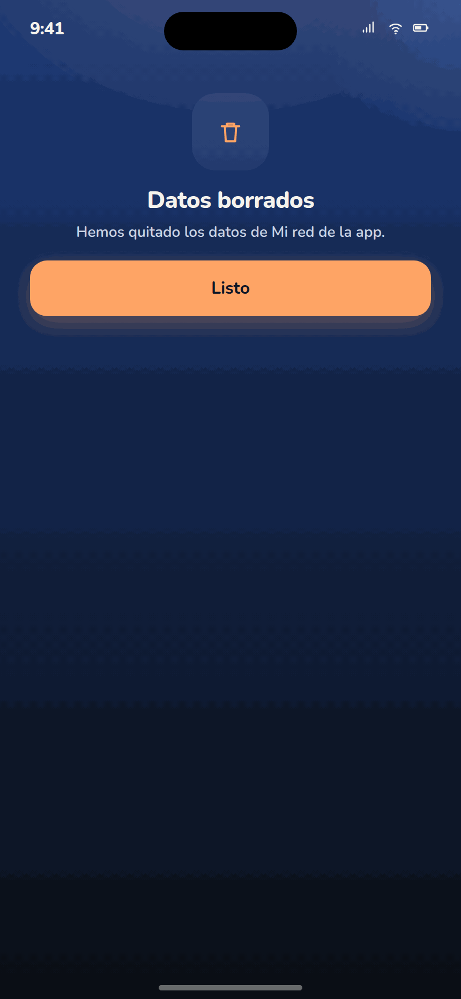
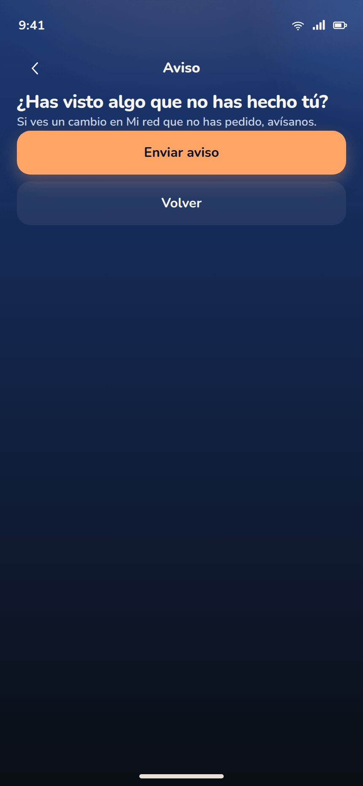
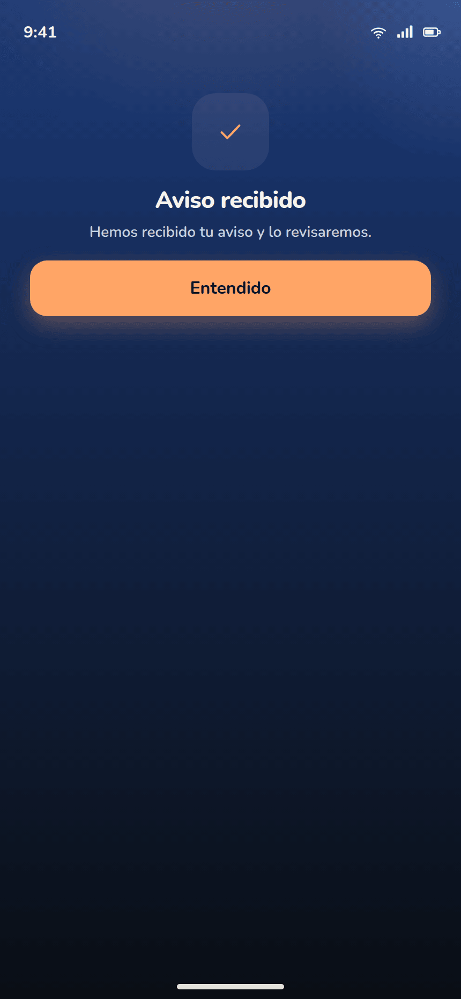
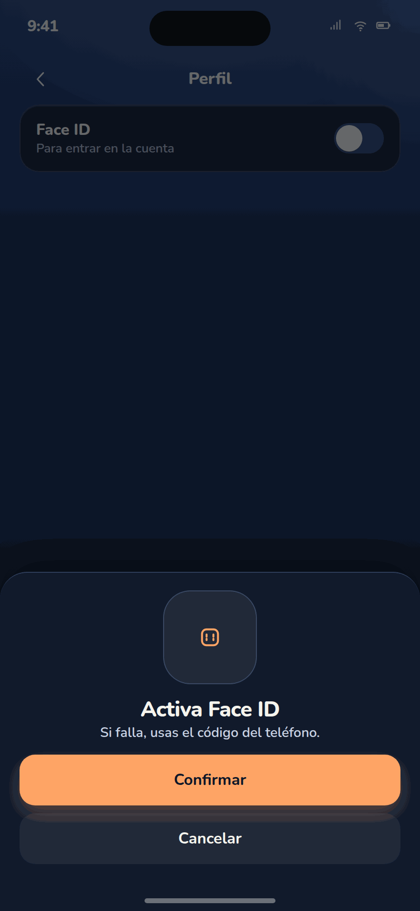

Приватность и контроль
Согласия, копия ваших данных, удаление аккаунта и данных сети, сброс Mi red и кнопка «Это не я» — что вы можете сделать сами.
Здесь — то, что вы сможете сделать сами в приложении. Как этот сайт обращается с данными, описано в политике конфиденциальности сайта внизу страницы.
Своё «да» можно забрать
Согласия собраны в одном месте: чат с Mi gestor, аналитика, предложения и новости. Каждое выключается тем же переключателем, которым включалось.


Ваши данные — по запросу
Копию своих данных можно запросить в приложении, её пришлют на вашу почту.


Уйти можно — и передумать тоже
Аккаунт удаляется, когда закончились договоры. Пока они действуют, приложение объяснит почему и предложит обсудить это с Mi gestor. После подтверждения удаление планируется, и, пока оно не прошло, его можно отменить кнопкой «Отменить удаление».





Стереть данные сети — отдельной кнопкой
Данные домашней сети можно удалить отдельно от аккаунта. Это делает владелец, подтвердив действие биометрией или кодом телефона.





Заметили чужое — нажмите одну кнопку
Если в аккаунте или в Mi red появилось то, чего вы не делали, например незнакомый телефон, нажмите «Это не я». Мы проверим, что произошло, а приложение подскажет, что сделать сразу: сменить код телефона и пароли роутера и Wi‑Fi.




Потеряли все телефоны — дом можно вернуть
Если потеряны все телефоны семьи или в сети появился незнакомый, владелец может сбросить Mi red. Сброс начинается через 72 часа, и до этого его можно отменить. Потом телефон подключается заново.


Открывается только вами
Приложение можно закрыть Face ID, и при открытии оно попросит подтвердить, что это вы. Если Face ID не сработал, подойдёт код телефона.
Приложение можно закрыть отпечатком, и при открытии оно попросит подтвердить, что это вы. Если отпечаток не сработал, подойдёт код телефона.



Политика конфиденциальности сайта
Ответственный за обработку: PADELADA WORLD, S.L. (Sociedad Unipersonal), NIF B05783238, Calle Josep Pla, 8, escalera 1, puerta 1, local, 17252 Calonge i Sant Antoni (Girona), España. Почта: privacidad@orrofi.com. Инспектора по защите данных (DPO) у нас нет.
На сайте нет форм и аккаунтов, он не использует cookies, аналитику и рекламные инструменты.
Что хранит ваш браузер: если вы выбираете «iPhone» или «Android», сайт запоминает выбор в локальном хранилище браузера, чтобы показывать экраны этого телефона. Эти сведения не покидают браузер, удалить их можно в настройках браузера.
Хостинг: сайт размещён на GitHub Pages компании GitHub, Inc. Когда вы открываете страницу, GitHub записывает ваш IP-адрес в целях безопасности, как сказано в его заявлении о конфиденциальности.
Если вы нам пишете: адрес почты и текст письма мы используем только для ответа, а если вы просите реализовать свои права, — для выполнения этой просьбы. Основание: наш законный интерес отвечать тем, кто нам пишет (ст. 6.1.f RGPD), а для запросов о правах — исполнение обязанности по закону (ст. 6.1.c RGPD). Почта проходит через Cloudflare Email Routing (Cloudflare, Inc.) и пересылается в ящик Gmail (Google Ireland Ltd. / Google LLC). Эти поставщики могут передавать данные в США по Data Privacy Framework и стандартным договорным условиям. Письмо мы храним до закрытия обращения и ещё 12 месяцев. Запросы о правах храним столько, сколько нужно, чтобы подтвердить ответ, но не дольше 3 лет.
Ваши права: доступ, исправление, удаление, возражение, ограничение обработки и переносимость — напишите на privacidad@orrofi.com. Если вы считаете, что мы плохо рассмотрели ваш запрос, можно подать жалобу в Испанское агентство по защите данных (www.aepd.es).
У приложения OrroFi будет своя политика конфиденциальности; мы опубликуем её до выхода приложения.